Tandartspraktijk · Sint-Gillis-Waas
De architecten
van uw glimlach.
Een gezonde glimlach voor jong en oud. Bij MDental vindt u algemene tandheelkunde, esthetiek, implantologie en wortelkanaalbehandelingen onder één dak, in het centrum van het dorp.
- Open
- Ma – vr
9u – 17u - Adres
- Nieuwstraat 10
Sint-Gillis-Waas - Wij spreken
- 9 talen,
waaronder NL · FR · EN
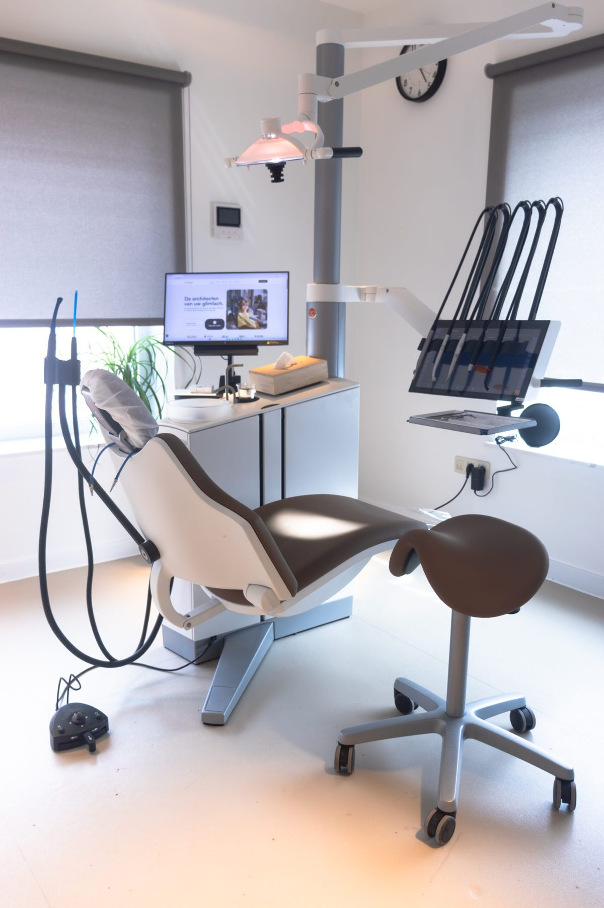
Behandelingen
Van een halfjaarlijkse controle tot een volledig implantaattraject. Twijfelt u welke behandeling bij u past? Dan bekijken we dat samen tijdens een eerste consult.
-
01
Algemene tandheelkunde
Controles, vullingen, wortelkanaalbehandelingen en professionele reiniging. De basis voor een gezonde mond.
-
02
Esthetische tandheelkunde
Bleken, inlays, facings en composietrestauraties, voor wie zijn glimlach een stap verder wil brengen.
-
03
Prothetiek
Kronen, bruggen en uitneembare prothesen die er natuurlijk uitzien en jarenlang meegaan.
-
04
Orthodontie
Scheve tanden rechtzetten en de beet verbeteren, met klassieke beugels of onzichtbare aligners.
-
05
Chirurgie
Extracties van voortanden, kiezen en wijsheidstanden, uitgevoerd met zorg voor uw comfort.
-
06
Implantologie
Vaste, duurzame vervanging van ontbrekende tanden, door onze implantoloog met meer dan 15 jaar ervaring.
Een praktijk die anders aanvoelt
Een tandartsbezoek hoeft geen opgave te zijn. We namen de tijd om een praktijk in te richten waar u zich meteen op uw gemak voelt: rustige kamers, daglicht en een team dat de tijd neemt om uit te leggen wat er gebeurt.
We werken met behandelunits van XO Care en 3D-beeldvorming van DEXIS. Daardoor kunnen we nauwkeuriger diagnosticeren, zijn behandelingen comfortabeler en ziet u zelf op het scherm wat wij zien.
- Ervaren team. Tandartsen en specialisten met opleidingen in binnen- en buitenland.
- Alles onder één dak. Van controle tot implantaat en wortelkanaalbehandeling.
- Moderne apparatuur. Digitale röntgen, intra-orale scanner en 3D-ontwerp.
- Eenvoudig plannen. Online boeken en herinneringen via Progenda.
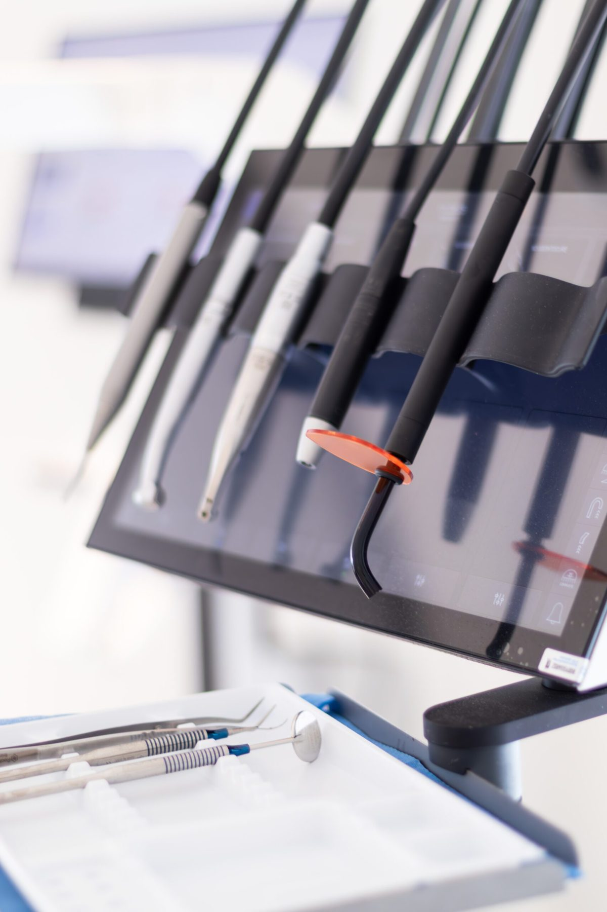
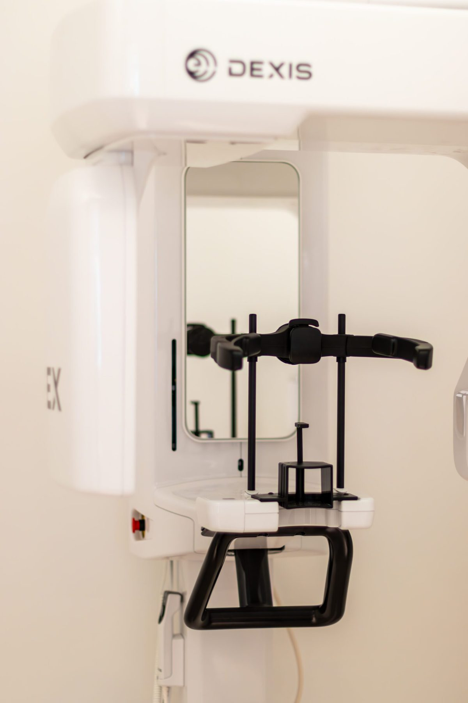
Spreek gerust uw eigen taal.
Ons team spreekt er samen negen.
- Nederlands
- Français
- English
- Español
- Português
- Italiano
- Türkçe
- Русский
- فارسی
Het team
Tandartsen met een opleiding in Poznań, Lissabon, Chieti, Ankara, Madrid en Amsterdam, die elkaar elke dag in Sint-Gillis-Waas aanvullen.
-
Bartosz Michałowski
Hoofdtandarts
Algemene en esthetische tandheelkunde, esthetische geneeskunde.
-
Mónica Pereira Lourenço
Tandarts
Kindertandheelkunde en esthetische composietrestauraties.
-
Mehrnaz Shekarchian
Tandarts
Esthetische en prothetische behandelingen.
-
Neslihan Vural
Tandarts
Restauratieve tandheelkunde en prothetiek.
-
Jose Sanchez Salazar
Implantoloog
Implantologie, kaakchirurgie en parodontologie.
-
Lior van Wageningen
Endodontoloog
Eenvoudige en complexe wortelkanaalbehandelingen.
-
Ivan Risaldi
Medevennoot · praktijkmanager
Organisatie, planning en uw aanspreekpunt voor praktische vragen.
-
Gerson Lozano
Tandartsassistent
Klinische assistentie, onthaal en digitale scans.
Wat betekent geconventioneerd? Een geconventioneerde tandarts volgt de officiële RIZIV-tarieven. Partieel geconventioneerd betekent dat dit op vaste tijdstippen het geval is. Bij twijfel helpen we u graag verder aan de telefoon.
Uw bezoek
| Maandag | 9u – 17u |
|---|---|
| Dinsdag | 9u – 17u |
| Woensdag | 9u – 17u |
| Donderdag | 9u – 17u |
| Vrijdag | 9u – 17u |
| Zaterdag | Gesloten |
| Zondag | Gesloten |
Goed om te weten
Hoe maak ik een afspraak?
Het snelst gaat dat online via Progenda: u kiest zelf een dag en uur en krijgt een bevestiging per e-mail. Liever telefonisch? Bel 03 344 60 51.
Hoe ver op voorhand plan ik best?
Reken op ongeveer een week om de dag en het uur van uw voorkeur te krijgen. Voor dringende zaken belt u ons best rechtstreeks.
Wat breng ik mee?
Uw identiteitskaart en, indien van toepassing, de gegevens van uw hospitalisatie- of tandverzekering. Neemt u medicatie of heeft u een medische aandoening? Laat het ons zeker weten.
Wat als ik moet annuleren?
Laat het ons minstens 24 uur vooraf weten, dan kunnen we iemand anders helpen. Bent u wat later dan gepland, bel even. We doen ons best, maar de behandeltijd kan dan korter zijn.
Hoe kan ik betalen?
Met Bancontact, kredietkaart of cash. Voor grotere behandelingen kunnen we medische financiering bespreken.
Werken jullie met verzekeringen?
Ja. Controleer best uw polis voor de precieze voorwaarden; wij bezorgen u de nodige attesten.
We werken samen met
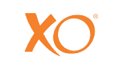
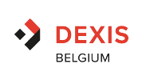
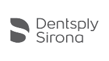
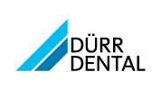
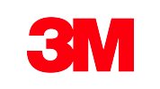
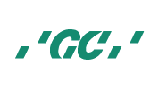
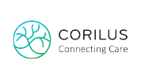
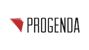
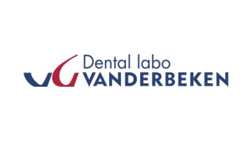
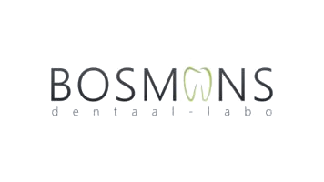
Kom langs in de Nieuwstraat
U vindt ons in het centrum van Sint-Gillis-Waas.
- AdresNieuwstraat 10
9170 Sint-Gillis-Waas - Telefoon03 344 60 51
- E-mailinfo@mdental.be